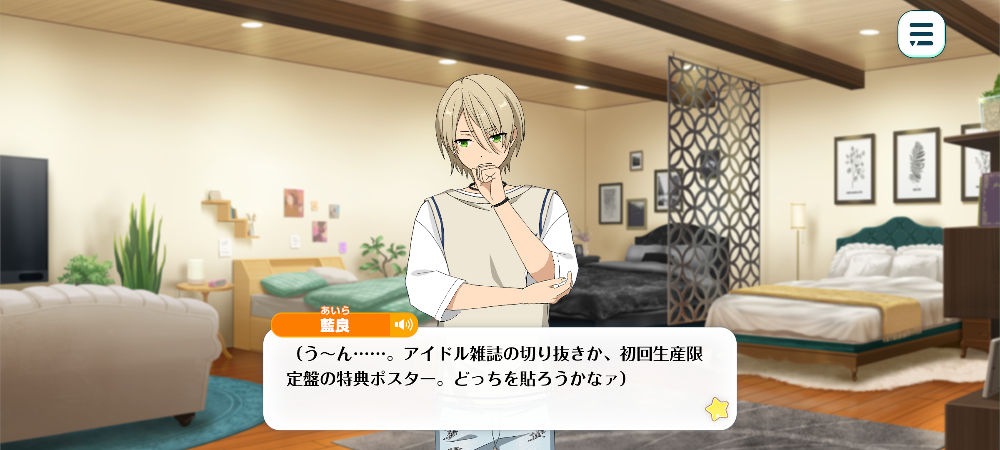
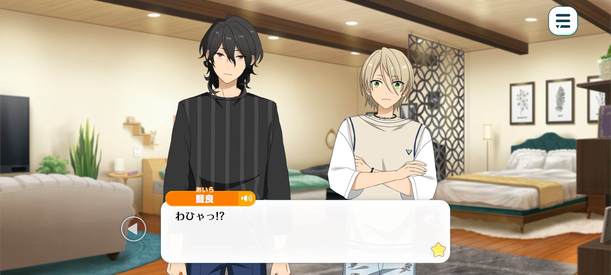
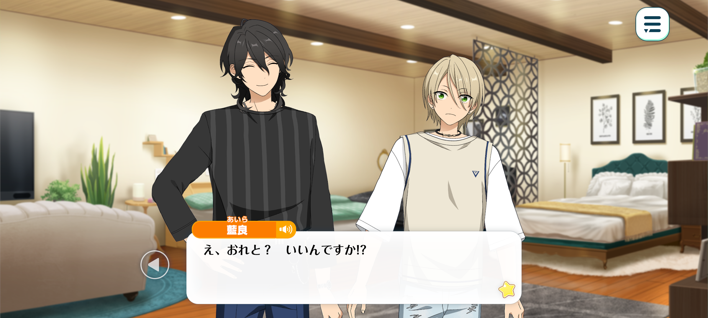
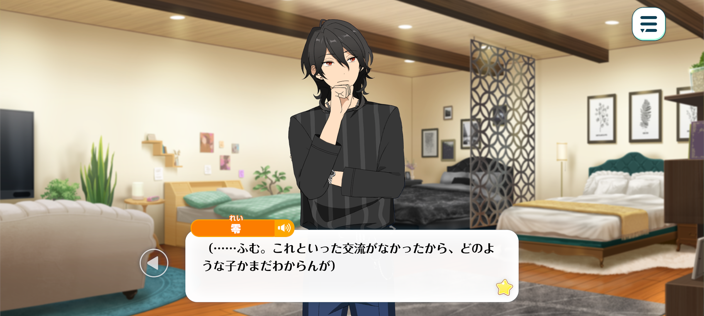
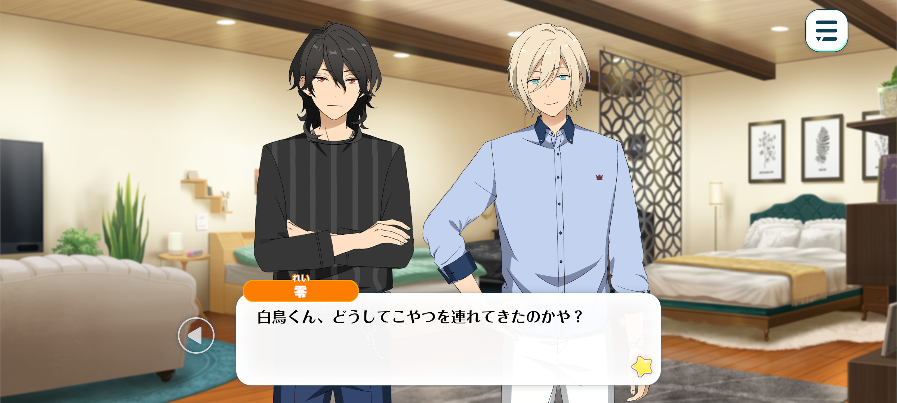

White and Black Wartime
Idol Story


Season: Summer

Aira:(Hmm... Now, which should I put up first? The idol magazine clippings, or the bonus poster from the first-press limited edition...?)
(I'd really love to display all my precious merch, but decorating the entire room with everything I own would be a little embarrassing, wouldn't it...?)
(I don't want anyone coming in and thinking, 'Ugh, what a total cringe-fest...' and avoiding me! I'll just have to hide the rest under my bed.)
(...So I'm really going to be sharing a room with Tenshouin-senpai and Sakuma-senpai, huh? I was so happy I could've died when I first found out, back when we were still in the old building...)
(But now that I'm actually here, I can't seem to settle down... There's nobody else around, but everything still feels so surreal.)
(...Ah! Wait, could this be a dream!?)
(What if this is just a dream, and when I wake up, I'll find myself still in the middle of MDM...?)
(Uuugh, I don't want to wake up! Even if it's only for a moment, please let me spend some time with my senpais...!)
Tenshouin-senpai~! Sakuma-senpai~...!

Rei: Did you call for me?
Aira: W-WAH?!
S-S-S-Sakuma-senpai...! You appeared so suddenly, I thought you were some sort of ghost...!
Rei: Whatever are you talking about? I assure you, I am quite real.
Now then, what brings you to my room? I don't believe I've had the pleasure of meeting you before. Have you lost your way, perchance?
Aira: Ah, um! I'm Shiratori Aira from ALKALOID!
Oh, I'm sorry! You probably don't know who ALKALOID is. Compared to the other units, we're just a bunch of inexperienced rookies...
We're part of StarPro! Every day, we're working hard to improve by following in the footsteps of our seniors in fine, Trickstar, Ryuseitai and all the other wonderful units!
Of course, I admire idols from other agencies just as much! I mean, idols are my whole life, after all!
That's why I'm so happy I get to share a room with my idol, Sakuma-senpai. I still have a long way to go, but I hope you'll take good care of me.
Rei: Hmm. You were speaking rather quickly and enthusiastically that I'm afraid I didn't catch every word...
Shiratori-kun, was it? I take it you'll be our new roommate, then.
I should have been here to welcome you myself. My apologies for keeping you waiting.
Aira: W-Wah, not at all! I'm practically nothing compared to you, senpai! Please, don't worry about me!
Rei: There's no need to be so intimidated. We'll be living together from now on, after all. You needn't be so reserved around me. Make yourself at home.
Aira: N-No, no, no! That would be far too much! Please, just think of me as a stain on the wall!
Rei: …
(Hmm... Tact is a virtue, but if things continue like this, neither of us will ever feel comfortable in our own room.)
(...So he's with StarPro, is he? Come to think of it, I believe Tenshouin-kun was involved in the formation of ALKALOID...)
(Could there be some ulterior motive behind assigning the two of us to the same room, with this boy thrown into the mix as well?)
(Well, perhaps I ought to try and glean a little information from him...)
Since we're going to be sharing a room, I'd very much like for us to get along, Shiratori-kun. ♪
How about we have some tea together? It'll give us a chance to get to know each other better.

Aira: Eh? With me? Are you sure that's okay!?
Rei: Of course. I'll be having some tomato juice, but what would you care for? We have black tea, green tea, and oolong tea. A little variety never hurts, you see.
Aira: Th-then... I'll have oolong tea, please...
May I ask why are you drinking tomato juice...? Is it good for your health?
Just as you'd expect from a senpai... He's so health-conscious... ♪
Rei: (Hm? It seems we've run out of snacks.)
(My, my. I can't count the number of times I've told him to restock whenever we run out...)
Would you be so kind as to wait a moment? I'll fetch something from the kitchen to accompany our tea.
Aira: Ah, I'll go! Is there anything in particular you'd like? Anything you're in the mood for?
Rei: Nothing in particular. Just bring back whatever takes your fancy.
Aira: Got it!

Rei: (...Hmm. We haven't had much opportunity to speak with one another just yet, so I'm afraid I still haven't quite figured out what sort of person he is.)
(At the very least, he doesn't seem to be a bad boy.)
(He's attentive enough, but I wonder if he's a little too flighty to make a useful pawn. His eyes were wandering all over the place throughout our entire conversation.)
(Someone so easily distracted could hardly make for a competent spy. Perhaps there was little reason to be suspicious of him after all...)
(...Though, perhaps I shouldn't be so quick to reach that conclusion. After all, this is Tenshouin-kun we're talking about.)
(There's no telling what sort of schemes he might be concocting, far beyond the limits of my imagination.)
Aira: Sorry to keep you waiting!
Rei: Oh, that was quick! I've already finished preparing the tea.

Eichi: How lovely. Perhaps I'll join you, too? ♪
Rei: …
Shiratori-kun, might I ask why you've brought this man along?
Aira: Eh? I mean, I didn't exactly bring him alon—
Eichi: There's nothing strange about me being here, is there? This is my room, too, after all.
My throat's feeling a little dry. Would you mind making me a cup of black tea as well, Sakuma-kun?
Rei: Of course. I'll be delighted to serve you some tea hot enough to scald your tongue... ♪
Aira: U-Um... Do you two perhaps... not get along very well?
Rei: Not at all! We're the very best of friends, aren't we~? We do share a room, after all. ☆
Eichi: That's right. You couldn't possibly live with someone you didn't get along with.
I look forward to continuing our wonderful relationship, Sakuma-kun. ♪
Rei: I'd have it no other way, Tenshouin-kun... ♪